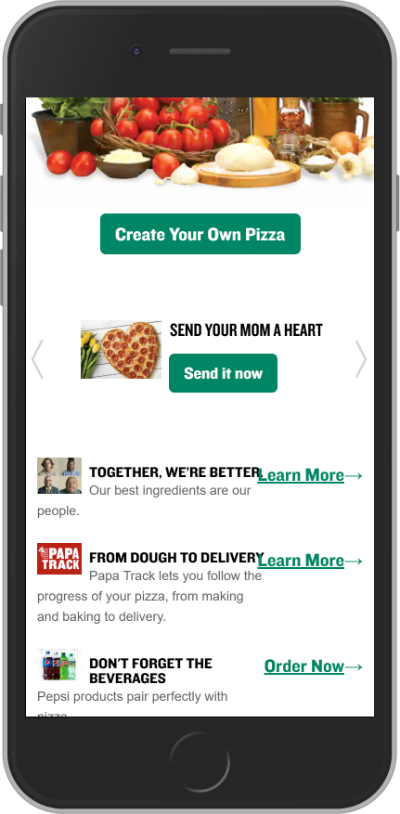

Repetition
Papa Johns
I like how Papa Johns uses repetition with the navagation buttons. It's uniform as to where to click to move forward, or proceed with a checkout. I like having this type of navagation more recognizable throughout the site.
I like how Papa Johns uses repetition with the navagation buttons. It's uniform as to where to click to move forward, or proceed with a checkout. I like having this type of navagation more recognizable throughout the site.